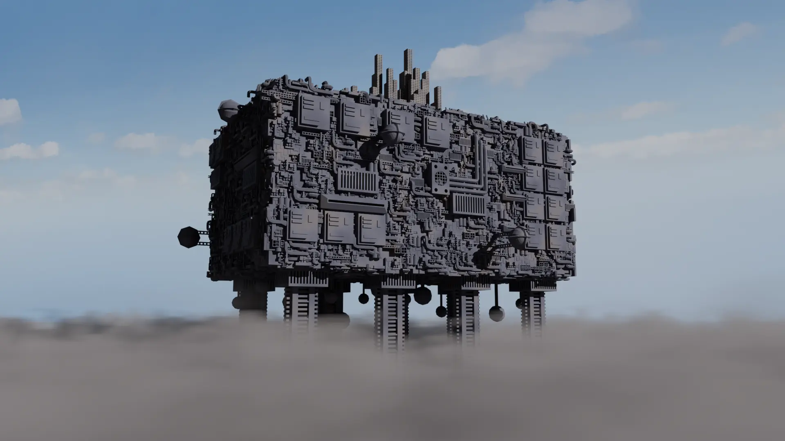
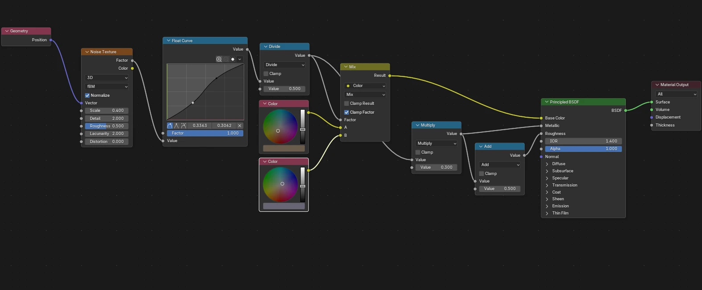
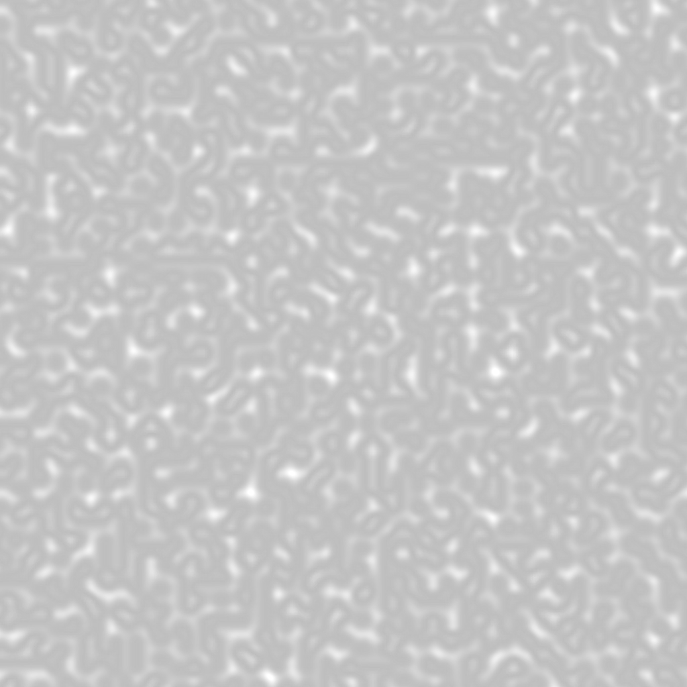

Summary
The second megastructure I added was an Iterator Superstructure from Videocult's Rain World. An Iterator Superstructure or is a gigantic metal structure that towers above the clouds, supported by eight legs. A prominent feature of an Iterator is is the greebles that cover its surface. This presents an interesting challenge for modelling, as heavy greebling can easily lead to a very high polygon count. In figure 1 you can see a high quality render of the final model, which was used on the home page of the website for both the card and hero video. For this render I did not worry much about the polygon count and I added volumetric clouds around the base of the structure to give a better sense of scale.

Modelling
To create this model I used the 3D modelling software Blender. As Rain World is a 2D game, I had only a single image of the superstructure to use as reference which can be seen on the Iterator page. The Iterator is fundamentally a very simple structure, with a cuboid supported by eight legs. The complexity comes from the greebles that cover the surface of the structure. Aside from greebling, the model only requires the legs and the city on top to be modelled. The city was modelled using the "add cube" tool and subdividing the top faces to create a more interesting silhouette. The legs were modelled with heavy use of the mirror and array modifiers, which excel for repetitive tasks such as this.
Greebling
The greelbing on the Iterator Superstructure is separated into two categories. Large, purposefully placed greebles and small randomly placed greebles. Both are modelled using the same process, many of which makes heavy use of the "spin" tool to create interweaving pipes and cables. The large greebles were purposefully placed on the model to make it look more functional, instead of the visual noise added by the small greebles. The model without any of the small greebles can be seen in figure 2. The small greebles were added using Blender's "Scatter on Surface" modifier which randomly distributes objects across the surface of a model. I created a collection of eight different greeble models to use with this modifier, which can be seen below. I took care to ensure these models were very low poly to avoid the polygon count of the model ballooning out of control. However, even with this the finished model have over 100,000 polygons which is very high for a model to be used in a web application.
Texturing
As this was my second model, I wanted to experiment with Blender's powerful Shader Node system. This was mostly because the Iterator's surface is mostly metal, which can be difficult to texture with traditional image textures. Instead I created a procedural shader that uses noise textures to create rust and dirt effects on the surface of the model, seen in figure 4. I also used Shader Node to create the texture for the city on top of the superstructure. This uses the "Brick Texture" node to create a repeating pattern of rectangles that look like windows. This shader is significantly more complicated as it has to map the brick texture, which is usually only on the top of a surface, to all sides of the buildings in the city.
Unfortunately, three.js does not support procedural shaders created in Blender and so I had to use
Blender to "bake" the shader into a regular image texture which could then be used in three.js. This
baking process uses a 4096x4096 image which was made the model very large. This is what
led me to set up the GLTF compression settings talked about on the general tab.

Features
The Iterator Superstructure page has by far the greatest number of unique features of any megastructure on the website, which this section will explore. For more information on the shared features of all three megastructures, see the general tab.
Clouds

The first and most obvious unique feature are the clouds that surround the base of the
superstructure. Three.js does not support the volumetric clouds I used in Blender, and so I had to
get creative to achieve a similar effect. After some experimentation I settled on stacking six
layers of semi-transparent planes with procedural cloud textures. The texture for each layer is
generated when the page is loaded using three.js's ImprovedNoise for creating
Perlin Noise. Each layer of clouds has a
progressively lower threshold, giving the effect that the clouds become denser lower down. The
effect is further improved by slowly scrolling the textures of each layer, which are large enough to
not have too obvious a seam. The cloud texture can be seen in figure 5.
Lightning
In Rainworld occasional flashes of green lightning can be seen underneath Iterator Superstructures.
This is one of the distinctive features that makes Iterators recognisable, and so I decided to
implement it on this website. To achieve this, I used the
set timeout
function to randomly schedule the effect. When the effect is triggered, I move move a
PointLight instance to a random location underneath the superstructure and flash it
twice using three more calls to setTimeout. I also play a random thunder sound from the
same location using three.js's PositionalAudio class. This creates a nice audiovisual
effect that adds to the atmosphere of the page.
Venting Particles
The primary interactivity feature of the Iterator page is the ability to vent its coolant from the control panel. In Rain World, Iterators consume and vent vast quantities of water on periodic cycles. This is what causes the titular rain in the game. To simulate this effect, I used the nebula library which provides a powerful particle system for three.js. I set up and positioned five particle emitters inside all of the large vent greebles on the model. When the user activates the venting from the control panel, the emission rate is increased to 10 particles per second and the particles begin to spawn. The texture for the particles is taken from the Kenney free asset library.
The nebula emitter configuration is given in the code snippet below.